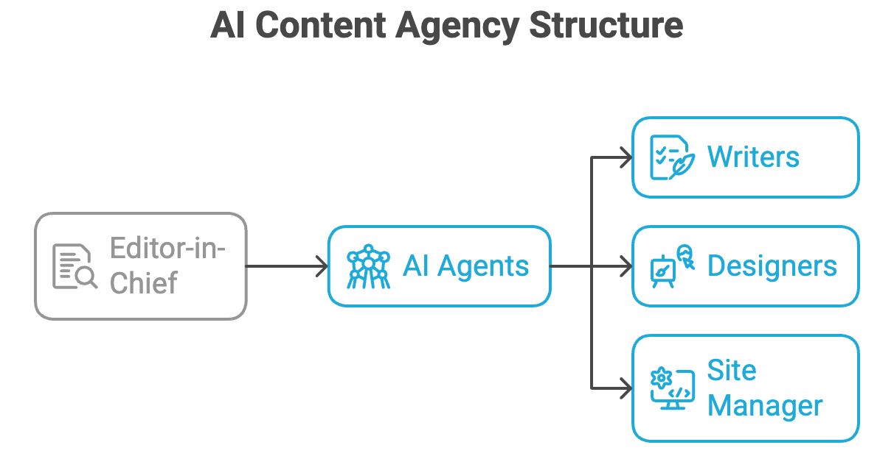

Building With AI Agents — I Stay in Control
I was running a managed site — WordPress, in my case — paying $15 a month for something I barely touched. The real problem wasn't the cost. It was that ideas were scattered everywhere and nothing was getting published.
The Problem With Managed Site Builders
WordPress, Squarespace, Wix — they all promise the same thing: easy publishing, no technical skills needed. And for a lot of people, that's true. But easy setup doesn't mean easy workflow. Ideas still lived scattered across Slack, email, voice notes, and random documents. Publishing still meant writing, formatting, managing templates, and waiting for an editor to cooperate. Throw in plugin updates and security patches, and the tool that was supposed to save time was asking for more of it.
The deeper issue: I didn't want someone to manage the site for me. I wanted to stay in control of the process myself — but without spending time on the repetitive, mechanical work every update requires. That's a different need than what these platforms are designed to solve.
Four Agents, One Human Making the Calls
I moved to GitHub Pages — free, clean, plain HTML and CSS. The cost argument was simple: I was paying for convenience I wasn't using. GitHub Pages gave me the same outcome at zero cost, and came with something managed platforms don't: native version control and a release process that fits naturally into automation. Every change tracked, every deployment intentional.
But the bigger shift wasn't the hosting. Think of it like having a content agency — writers, designers, a site manager — except instead of hiring people or paying a retainer, I built that agency out of AI agents. Each one handles a specific role. I'm the editor-in-chief who approves what goes out. This is what an agentic AI workflow actually looks like in practice — not a demo, a real system I run every week.

Agent: Idea Organizer
I send raw inputs — messy thoughts, bullet points, research references, links I've been sitting on. The agent organizes everything into a structured entry in Notion with metadata: topic, status, priority. My role: review the structured idea, approve it or send it back. Ideas stack up organized and ready instead of scattered across three apps.
Agent: Note Writer
I trained this agent on my tone and how I structure arguments. I feed it research and raw ideas. It generates a full HTML draft — semantic markup, SEO metadata, styling already applied. The agent does 80% of the work. I do the final 20% that makes it mine: the voice, the honest takes, the parts that require actual judgment.
Agent: Site Builder
When a note is ready, the index page needs a new card. I describe what I want. The agent generates the HTML changes. I review the code before it touches anything, adjust if the styling is off, then approve.
The Staging Rule
This is where control actually happens.
The agent never auto-deploys. It never auto-commits. It prepares everything in a staging area — content, code changes, suggested commit messages — and waits. I review, adjust if needed, approve, and then commit manually.
Why manual commits matter: Auto-pilot is seductive but it disconnects you from what's actually changing. By committing yourself, you stay aware of what's going out, why it's changing, and whether it's right. The moment you automate away that step, you stop thinking about what you're publishing. Control keeps you honest. That's what human oversight in an AI workflow means in practice.
What This Actually Saves
Ideas don't get lost — they go straight into Notion instead of disappearing into a voice memo I'll never open. First drafts are fast — I focus on voice and accuracy, not blank-page paralysis. Site updates take minutes, not an afternoon. And the cost is zero. GitHub Pages is free.
It's not about having AI do the work. It's about compressing the time between idea and published note while keeping the quality high. The agents accelerate the mechanics. I make the decisions.
Who This Works For
This makes sense if you have ideas worth publishing regularly, want to own your site completely, and understand enough code to review what gets generated. If you need comments, user logins, or a plugin ecosystem — wrong tool. But if you want to turn thinking into published content as fast as possible without losing control, it's hard to beat.
If you're using a managed platform because it's the path of least resistance — that's a fair choice. But if you're finding it limits more than it enables, consider building a pipeline instead. Use AI to handle the mechanics. Keep your hands on the commit button. You'll publish more and own everything you ship.